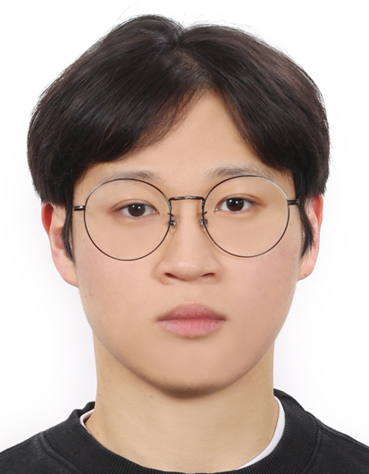

About Me

Jebin Kim
M.S. Candidate in Cybersecurity, Korea University
I am a master's student in Cybersecurity at Korea University. My research interests include cryptanalysis of lattice-based cryptography, AI-assisted cryptanalysis techniques, and post-quantum cryptography.
I am broadly interested in the mathematical and computational foundations of modern cryptanalysis, including LWE-based cryptography, lattice reduction, hardness estimation, and learning-guided optimization for large-scale cryptanalytic problems such as GNFS polynomial selection.
CV / wpqls1025@korea.ac.kr / Google Scholar(Preparing...) / LinkedIn